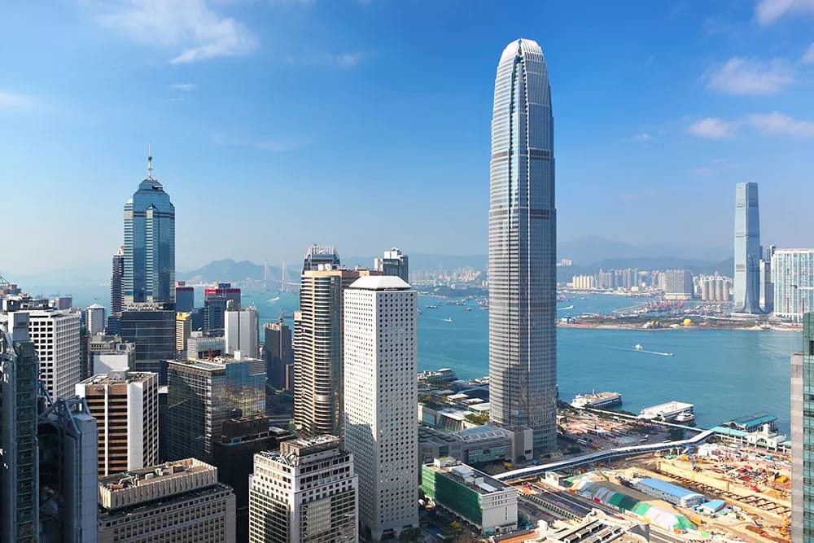
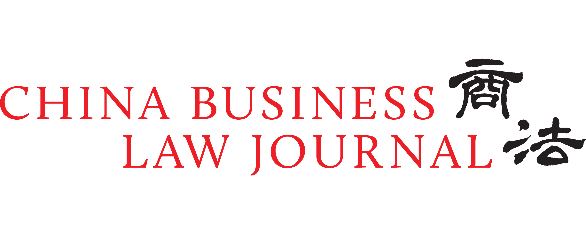

A boutique corporate law firm built on deep expertise, commercial acumen, and an unwavering commitment to client success.
H.M. Chan & Co. is a Hong Kong corporate law firm established by professionals with many years of extensive experience in handling cross-border international transactions. Our objective is to add value by drawing on our practical experience to foresee and minimise any potential issues which may arise.
We specialise in helping clients at all stages of the business life cycle — from development and seed funding of startups via private equity or venture capital investment, to growth and restructuring through public or private M&As, and fund raising through IPOs, secondary listings or equity or debt financing. We also assist listed companies in their post-listing regulatory and compliance matters, restructurings and investments.
The firm was set up by Mark Chan as its founder and managing partner in 2015, and initially operated in association with Taylor Wessing from 2016 to 2021 before formally becoming Taylor Wessing in 2021. During this time, it was recognised on numerous occasions as the "Transactional Boutique Law Firm of the Year" in Hong Kong by Asian Legal Business.
"We are excited to re-launch H.M. Chan & Co. and look forward to strengthening our presence in Hong Kong and across Asia."
— Mark Chan, Founder & Managing Partner
We combine deep legal expertise with sharp commercial and financial acumen. We understand that legal advice must be practical and aligned with our clients' business objectives — not just technically correct.
We ensure that every transaction has partner oversight and involvement at all times. Our clients benefit from direct access to our most experienced lawyers throughout the entire deal process.
With qualifications in Hong Kong, Singapore, and England & Wales, and over a decade of collaboration with leading international and Chinese law firms, we are uniquely positioned to advise on complex cross-border transactions.
As lead counsel, we proactively drive deals and coordinate with advisors across multiple jurisdictions, ensuring a seamless and efficient process while minimising the workload on our clients' management teams.
We are highly valued by our clients for understanding and customising our services and advice for their unique business needs, supporting them through all stages of their business life cycle.
Our team is fluent in English, Mandarin, and Cantonese, enabling us to bridge cultural and linguistic gaps in cross-border transactions involving Mainland Chinese, Hong Kong, and international parties.
Since our establishment in 2015, H.M. Chan & Co. has been consistently recognised by the world's leading legal publications for excellence in corporate law, capital markets, and private equity.

China Business Law Journal — China Deals of the Year 2025: H.M. Chan & Co. was recognised as Hong Kong legal counsel in the landmark acquisition of Kai Bo Food Supermarket by JD.com, Inc., one of China's largest e-commerce companies.
* Awards from 2016 to November 2025 were received under the firm's association with Taylor Wessing.